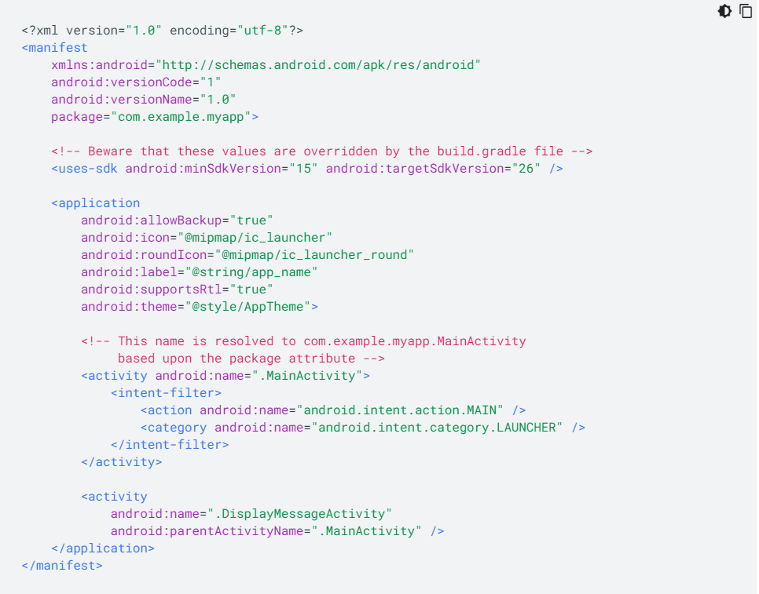
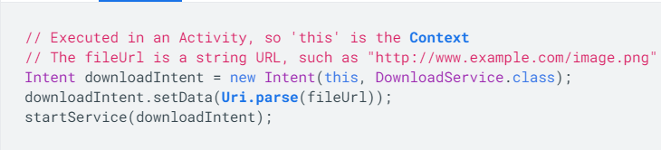
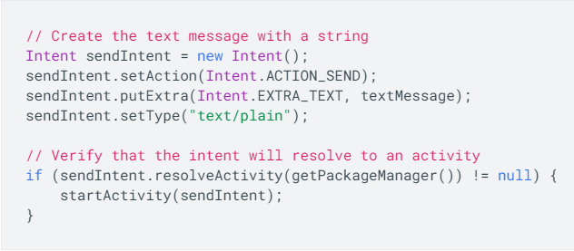

Colección de bibliotecas diferentes juntas para proporcionar un conjunto de código general reutilizable que entonces se puede personalizar para una aplicación específica. Frameworks es básicamente un montón de bibliotecas, funciones, clases y objetos reutilizables que ayudan a ahorrar tiempo.
Un IDE o un entorno integrado de desarrollo es un conjunto de aplicaciones, típicamente consistentes en un editor de código, un compilador, un depurador y una interfaz gráfica que puede o no ofrecer un entorno amigable a un framework.
Los recursos son los archivos adicionales y el contenido estático que usa tu código, como mapas de bits, definiciones de diseño, strings de interfaz de usuario, instrucciones de animación, etc.
Externalizar los recursos también te permite proporcionar recursos alternativos que admiten configuraciones específicas de los dispositivos, como idiomas o tamaños de pantalla distintos, lo que cada vez es más importante, ya que más dispositivos con tecnología Android están disponibles con configuraciones diferentes. A fin de brindar compatibilidad con configuraciones diferentes, debes organizar los recursos del directorio res/ del proyecto, para lo cual debes usar varios subdirectorios que agrupen recursos por tipo y configuración.
En cualquier tipo de recurso, puedes especificar recursos predeterminados y varios recursos alternativos para la aplicación:
Los recursos predeterminados son los que debes usar sin importar la configuración del dispositivo o cuando no hay recursos alternativos que coincidan con la configuración actual.
Los recursos alternativos son los que diseñaste para usar con una configuración específica. A fin de especificar que un grupo de recursos es para una configuración específica, agrega un calificador de configuración apropiado al nombre del directorio.
Directorios de recursos admitidos dentro del directorio res/ del proyecto:
| Nombre | Definicion |
|---|---|
| animator/ | Archivos XML que definen animaciones de propiedades. |
| anim/ | Archivos XML que definen animaciones de interpolación de movimiento. |
| color/ | Archivos XML que definen una lista de estados de colores. |
| drawable/ | Archivos de mapas de bits (.png, .9.png, .jpg y .gif). |
| mipmap/ | Archivos de elementos de diseño para diferentes densidades de los íconos de selectores. |
| layout/ | Archivos XML que definen el diseño de una interfaz de usuario. |
| Nombre | Definicion |
|---|---|
| menu/ | Archivos XML que definen menús de aplicaciones, como un menú de opciones, un menú contextual o un submenú. |
| raw/ | Archivos arbitrarios para guardar sin procesar. |
| values/ | Archivos XML que contienen valores simples, como strings, valores enteros y colores. |
| xml/ | Archivos XML arbitrarios que se pueden leer en tiempo de ejecución llamando a Resources.getXML(). |
| font/ | Archivos de fuentes, con extensiones como .ttf, .otf o .ttc. |
El archivo de manifiesto describe información esencial de tu aplicación para las herramientas de creación de Android, el sistema operativo Android y Google Play.
Entre muchas otras cosas, el archivo de manifiesto debe declarar lo siguiente:
El nombre del paquete de la aplicación , que normalmente coincide con el espacio de nombres de tu código. Las herramientas de compilación de Android usan esto para determinar la ubicación de las entidades de código cuando se compila el proyecto.
Los componentes de la aplicación , que incluyen todas las actividades, servicios, receptores de emisiones y proveedores de contenido. Cada componente debe definir propiedades básicas, como el nombre de su clase Kotlin o Java.
Los permisos que necesita la aplicación para acceder a las partes protegidas del sistema o a otras aplicaciones. También declara cualquier permiso que otras aplicaciones deben tener si quieren acceder al contenido de esta aplicación.
Las funciones de hardware y software que requiere la aplicación afectan a los dispositivos que pueden instalar la aplicación desde Google Play.
Nombre del paquete e ID de la aplicación
El elemento raíz del archivo de manifiesto requiere un atributo para el nombre del paquete de tu aplicación (que normalmente coincide con la estructura del directorio del proyecto: el espacio de nombres de Java).
Componentes de la aplicación
Por cada componente de app que crees en tu aplicación, deberás declarar un elemento XML correspondiente en el archivo de manifiesto:
Permisos
Las aplicaciones de Android deben solicitar permiso para acceder a datos del usuario confidenciales (como contactos y SMS) o a determinadas funciones del sistema (como la cámara y el acceso a Internet). Cada permiso se identifica con una etiqueta única.:
Ejemplo
El XML que aparece a continuación es un AndroidManifest.xml simple de ejemplo que declara dos actividades de la aplicación.
La clase Activity es un componente clave de una app para Android, y la forma en que se inician y se crean las actividades es una parte fundamental del modelo de aplicación de la plataforma. A diferencia de los paradigmas de programación en los que las apps se inician con un método main(), el sistema Android inicia el código en una instancia de Activity
Ciclo de vida de un Actividad
A lo largo de su vida útil, una actividad pasa por varios estados. Para administrar las transiciones entre estados, debes usar una serie de devoluciones de llamadas.
• onCreate(): Debes implementar esta devolución de llamada, que se activa cuando el sistema crea tu actividad. Tu implementación debe inicializar los componentes esenciales de tu actividad.
• onStart(): Cuando se cierra onCreate(), la actividad pasa al estado Iniciada y se vuelve visible para el usuario.
• onResume(): El sistema invoca esta devolución de llamada justo antes de que la actividad comience a interactuar con el usuario. En este punto, la actividad es la primera de la pila de actividades y captura todo lo que el usuario ingresa.
• onPause(): El sistema llama a onPause() cuando la actividad pierde el foco y pasa al estado Detenida. Este estado se produce, por ejemplo, cuando el usuario presiona el botón Atrás o Recientes.
• onStop(): El sistema llama a onStop() cuando la actividad ya no es visible para el usuario, lo cual puede ocurrir porque se está eliminando la actividad, porque se inicia una nueva o porque una ya existente pasa al estado Reanudada y cubre la actividad que se detuvo.
• onRestart(): El sistema invoca esta devolución de llamada cuando una actividad en estado Detenida está por volver a iniciarse. onRestart() restaura el estado de la actividad desde el momento en que esta se detuvo.
• onDestroy(): l sistema invoca esta devolución de llamada antes de que se elimine una actividad. Esta devolución de llamada es la última que recibe la actividad. onDestroy() suele implementarse a fin de garantizar que todos los recursos de una actividad se liberen cuando esta, o el proceso que la contiene, se elimina..
Una Intent es un objeto de mensajería que puedes usar para solicitar una acción de otro componente de una app. Si bien las intents facilitan la comunicación entre componentes de varias formas, existen tres casos de uso principales:
• Iniciar una actividad
Una Activity representa una única pantalla en una aplicación. Puedes iniciar una nueva instancia de una Activity pasando una Intent a startActivity(). La Intent describe la actividad que se debe iniciar y contiene los datos necesarios para ello.
• Iniciar un servicio
Un Service es un componente que realiza operaciones en segundo plano sin una interfaz de usuario. La Intent describe el servicio que se debe iniciar y contiene los datos necesarios para ello.
• Transmitir una emisión
Una emisión es un aviso que cualquier aplicación puede recibir. El sistema transmite varias emisiones de eventos, como cuando se inicia el sistema o comienza a cargarse el dispositivo.
Tipos de intents
Una Intent es un objeto de mensajería que puedes usar para solicitar una acción de otro componente de una app. Si bien las intents facilitan la comunicación entre componentes de varias formas, existen tres casos de uso principales:
Las intents explícitas especifican qué aplicación las administrará, ya sea incluyendo el nombre del paquete de la app de destino o el nombre de clase del componente completamente calificado. Normalmente, el usuario usa una intent explícita para iniciar un componente en su propia aplicación porque conoce el nombre de clase de la actividad o el servicio que desea iniciar.
Las intents implícitas no nombran el componente específico, pero, en cambio, declaran una acción general para realizar, lo cual permite que un componente de otra aplicación la maneje.
Ejemplo de intent explicita
Ejemplo de intent implicita
Información principal de una intent
• Nombre del componente
El nombre del componente que se debe iniciar. Esto es opcional, pero es la información clave que hace que una intent sea explícita, lo que significa que la intent debe enviarse solamente al componente de la aplicación definido en el nombre del componente.
• Acción
Una string que especifica la acción genérica que se debe realizar (como ver o elegir). En el caso de la intent de una emisión, es la acción que se produjo y que se está registrando. La acción determina cuál es la estructura del resto de la intent, especialmente la información que se incluye en los datos y extras.
• Datos
El URI (un objeto Uri) que hace referencia a los datos en los que se debe realizar la acción o el tipo de MIME de esos datos. El tipo de datos suministrado está generalmente determinado por la acción de la intent.
• Categoría
Una string que contiene información adicional sobre el tipo de componente que la intent debe manejar. En una intent, se puede incluir la cantidad deseada de descripciones de categorías, pero la mayoría de las intents no requieren una categoría.
• Extras
Pares clave-valor que contienen información adicional necesaria para completar la acción solicitada. Al igual que algunas acciones usan tipos particulares de URI de datos, algunas acciones también usan extras específicos.
• Indicadores
Los indicadores se definen en la clase Intent que funciona como metadatos de la intent. Los indicadores pueden indicar al sistema Android cómo iniciar una actividad (por ejemplo, a qué tarea debe pertenecer) y cómo tratarla después de que se inicia.